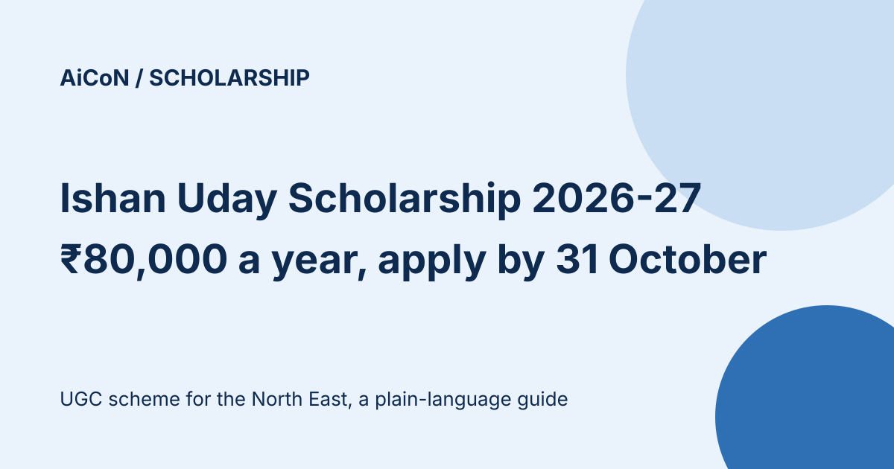

Ishan Uday Scholarship 2026-27: ₹80,000 a year for North East UG students, apply by 31 October
UGC's Ishan Uday scholarship supports first-year undergraduate students from the North Eastern Region. The UGC page lists ₹80,000 a year, with 10,000 fresh slots a year. Applications for 2026-27 are open on the National Scholarship Portal (NSP) until 31 October 2026.

What does it give?
The UGC scheme page lists financial assistance of ₹80,000 per annum. The NSP FAQ for the scheme says ₹8,000 a month for 10 months in a year. The tenure is 3 to 5 years, depending on the course. It is paid by Direct Benefit Transfer (DBT) to an Aadhaar-seeded bank account.
Who can apply?
| Domicile | Valid domicile certificate of any North Eastern state. |
|---|---|
| Education | Passed Class XII or equivalent from a school in the North Eastern Region and admitted in the first year of a regular, full-time UG degree. |
| Income | Parental income below ₹4.5 lakh a year. |
| Institute | Must have a valid AISHE code. |
| Not eligible | Distance or open-university students, people who already hold a UG degree, and anyone already on another scholarship. The scholarship is for the first UG degree only. |
Key dates on NSP
| Scheme open | 16 September 2026 |
|---|---|
| Student application | Until 31 October 2026 |
| Institute verification and defective applications | Until 15 November 2026 |
| District, state or ministry verification | Until 30 November 2026 |
How are awardees picked?
The NSP FAQ says selection is purely on state-wise merit among applicants. Half of the slots are for arts, humanities, social sciences, law and management. The other half are for science, engineering, medical, technical, agriculture and forestry programmes. Only verified applications are considered, and applications cannot be edited after the closing date.
A careful checklist
- Check that you have a North East domicile certificate and your family income proof.
- Generate your OTR on scholarships.gov.in using Aadhaar or Aadhaar Enrolment ID (EID).
- Apply under Ishan Uday Special Scholarship Scheme and submit before 31 October 2026.
- Ask your institute to verify the application before 15 November 2026.
We did not log in or apply. We read the NSP scheme list, the UGC scheme page and the NSP FAQ. An older UGC guideline PDF shows monthly rates of ₹5,400 and ₹7,800, which differ from the current ₹80,000 a year on the UGC page. The current UGC scheme page and NSP FAQ agree on ₹80,000 a year; this guide follows those pages. Recheck the scheme details on NSP before submitting.
Frequently asked questions
Is there a renewal?
Yes. The scholarship renews for the next year after you complete the first year, but you must apply for renewal on NSP.
Can I apply with an integrated course?
Yes, but the scholarship is paid for the UG component only.
Sources: NSP scheme list, UGC scheme page, NSP FAQ. Checked 9 October 2026. This is an AiCoN explainer, not a government publication.